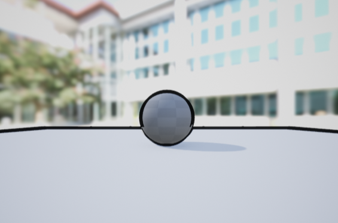
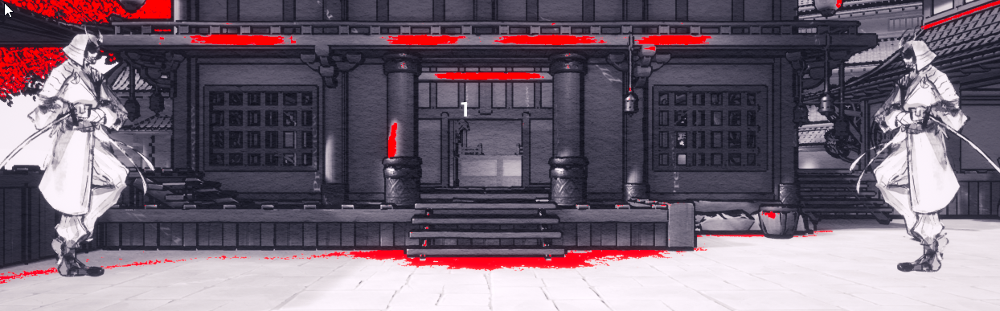

IAIDO was created during Global Game Jam 2022. My contributions to the game include some blueprinting as well as the materials used for both the models and the post processing.
The post processing stack includes four specific layers. The first layer is a simple grayscale using a weighted calculation. The second layer is the outline shader, and is the most interesting material of the stack.
I wanted to emulate the imperfections that came with brush strokes. To do this, I decided to botch the calculations for a general outline post processing effect on purpose by shifting the texture coordinates.
The third layer then filters the scene such that only the red hues come through as a solid color. The last layer creates a parchment like texture on top of the entire screen.
